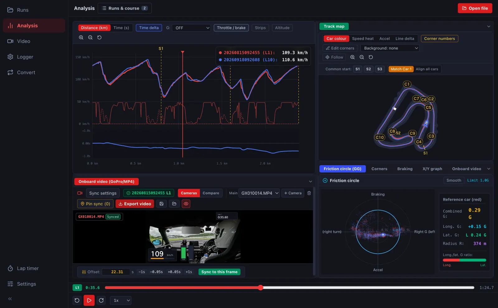

Analyse RaceStudio data on a Mac
Want to review saved AiM track data on your Mac? LapLoupe opens supported log files to compare lap times, racing lines and speed. Use the desktop app on an Apple Silicon Mac or the browser version on a computer.
Supported AiM data and its limits
- AiM CSV: CSV exported from RaceStudio with time, GPS latitude and GPS longitude. The importer reads supported position and speed columns.
- XRK and XRZ: supported GPS position records. Files without GPS records and all device or format variants are not guaranteed to work.
This does not import every channel or CAN data from XRK and XRZ files. AiM import has been checked with public samples and related material; complete testing with physical AiM devices remains outstanding.
Open and compare your logs on a Mac
- Open LapLoupe in the desktop app or browser.
- Select your saved AiM CSV or supported XRK or XRZ file. CSV needs GPS Latitude and GPS Longitude columns.
- Check the course and timing line, then select laps for comparison.
- Review speed and time-delta graphs alongside the course map.

Saved-file analysis and device management are different tasks
This guide covers analysing saved logs on a Mac. AiM device configuration, firmware updates and downloading directly from an AiM logger are outside this support scope. For device operations, see the manufacturer's software information.
LapLoupe is independent of AiM and RaceStudio. Start by checking that your own file can be imported.
Download for MacTry in your browser